My edge is in solving complex problems with design and technology. I obsess on the unique attributes of a company, translate it into a strong product vision, define how the product should look and feel, and lead design & engineering teams to make it come to life. I design, build, and ship product.
Special thanks: Product: Ben Smit. Engineering: Mason Wendell, Greg Kilian, Jeff Morin, David Colucci. Design: Gabriel Alves, Julianne Sombat, Hugo Broche, Tyler Reinhard, Jansen Cumbie, Alessandra Recine.
Led strategy & operations for all system-wide and brand-specific design work.
Key decision-maker for the design org partnering with product, design, and engineering leads on where and how to deploy resources.
Major partner with other stakeholders outside tech organization (editors, brand leads, marketing, biz dev, sales, etc.) who has an interest on the use and improvement of the system.
Managed delivery from creating tickets, to design, to build, to QA, to deployment.
Special thanks: Design: Gabriel Alves, Sarah Hood, Gillean Yuen, Liam Boylan. Product: Jeremy Browning, Noah Robischon. Engineering: Jason Sauser, et. al.
Deliverable: Help scale system to all brands.
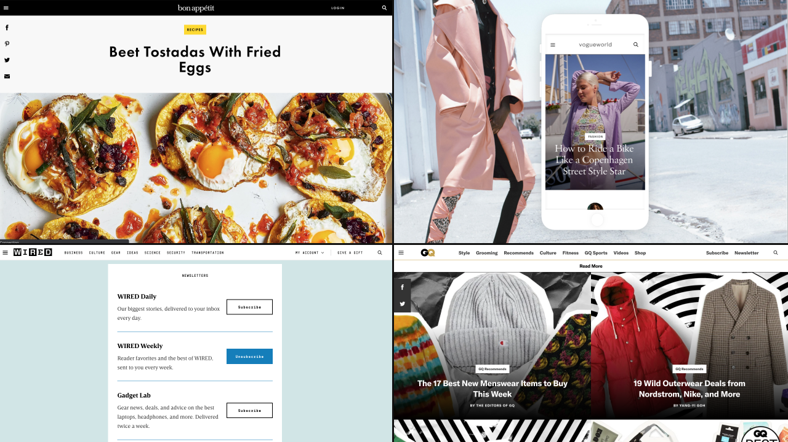
Deliverable: Maximize reusability of design and code onto new functionality and business needs.
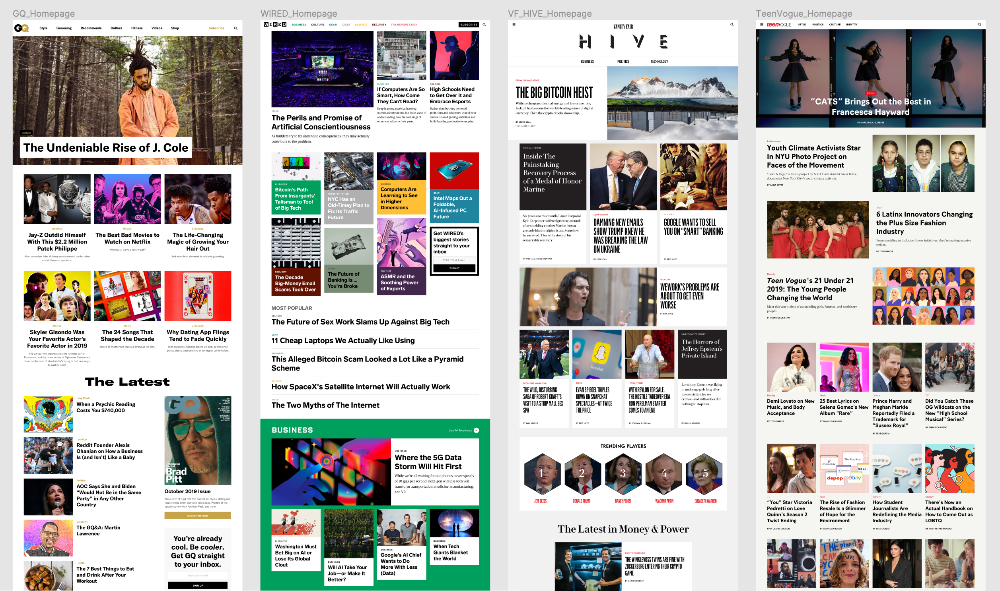
Deliverable: Design new concepts and possibilities to maintain spirit of inventiveness through a systems-based thinking. Visual designs by me.
Architectural Digest’s premium B2B subscription publication for interior design professionals
Identified the best flows & content experiences based on unique B2B content strategy balancing them with system constraints.
Designed new system components that can accommodate new user/business needs.
Led product for the engineering team in delivery of the front-end: roadmap, build prioritization, creating all user stories, and assessing system tradeoffs.
Established brand new CMS logic for editors to operate a new sub-brand and to curate brand new components.
Press:Wall Street Journal: “Condé Nast, Seeking Extra Revenue, Turns to Professionals”
Special thanks: Design: Adrian Harwood, Nelson Wallace, Lydia White. Product: Zac Frank. Engineering: Brandon Chang, Jeff Morin, Michael Warren, Fran Devinney, Alex Robertson. Brand Lead: Kim Beer.
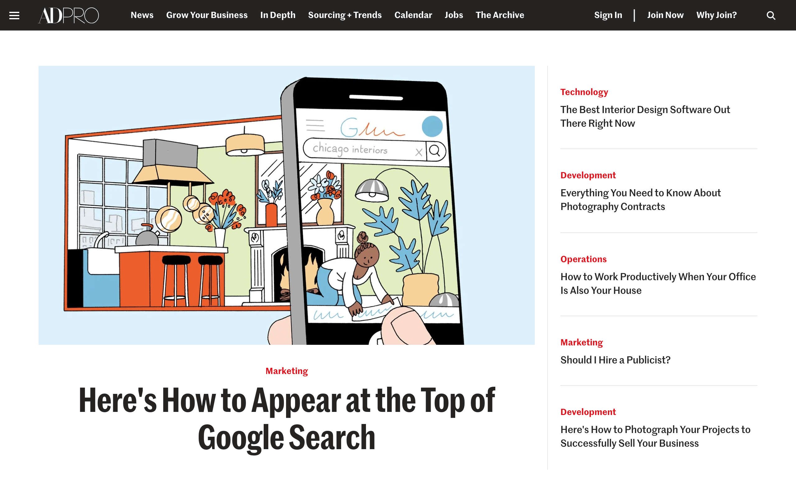
Visit the live website (4 free articles with email).
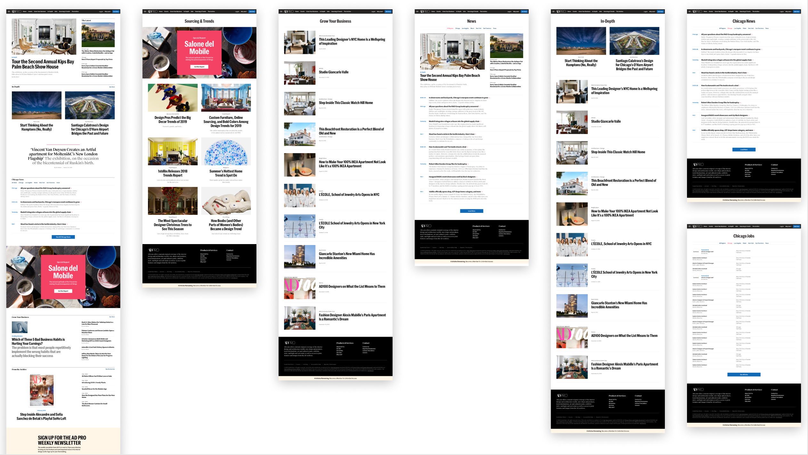
Deliverable: Brand new website with new components, new templates (channels, account management, etc.), new business model (B2B subscription) working on top of the Verso design system. Visual design by Adrian Harwood.
Golf Digest’s video instruction product to help golfers improve their game
Do user research and combine learnings from strategy to come up with concepts.
Craft entire end-to-end user experience, from the library, to the video section, to the learning tools, to purchasing.
Prototype refined designs and create new model and syntax for creating classes via the CMS.
Phase out delivery from MVP to full-service product.
Press:Digiday: “With Golf Digest, Conde Nast tees up first of several consumer marketing efforts”
Special thanks: Design:Adrian Harwood, Sarah Rowe. Product: Randi Eichenbaum, Joe Cera. Engineering: Jeff Morin, Michael Warren, David Colucci. Strategy: Mark Engelberg, Dominic Ainscough. Brand: Chris Reynolds, Molly Baldwin.
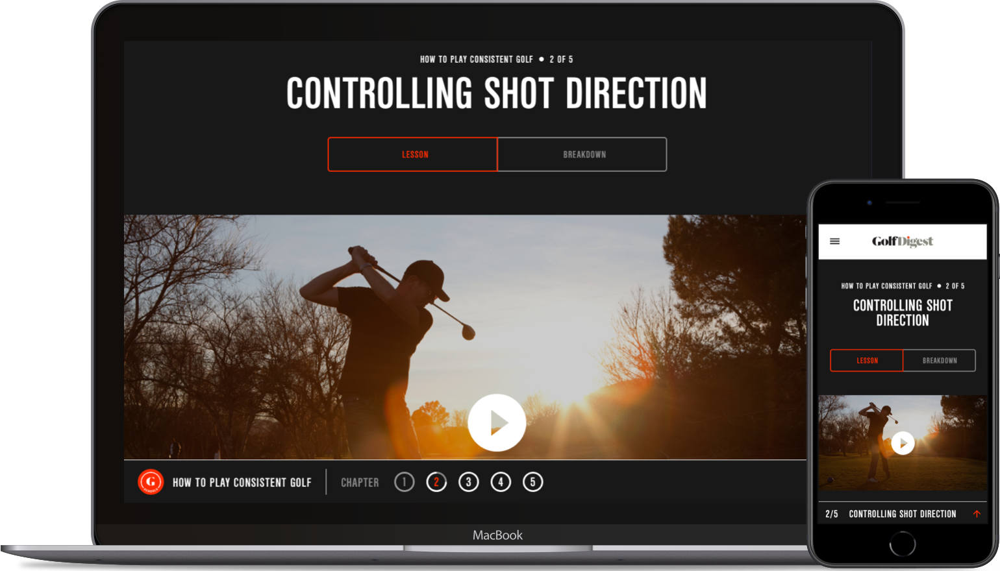
Deliverable: Interactive video lesson page.
Final: Video lesson page with learning tools, single class marketing pages, full educational portal and video library. Visual design by Adrian Harwood.
Designed a lightweight and minimal documentation site on Gatsby that acted as a source of truth of the yet-to-be-named design system while it was being built. Also created the documentation process and early heuristics/flowcharts for creating components.
Special thanks: Engineering: Meghan Morris
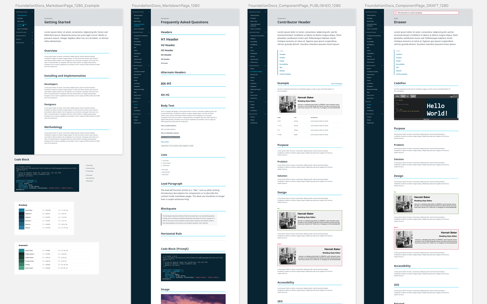
Designed a lightweight and minimal documentation site on Gatsby that acted as a source of truth of the yet-to-be-named design system while it was being built.
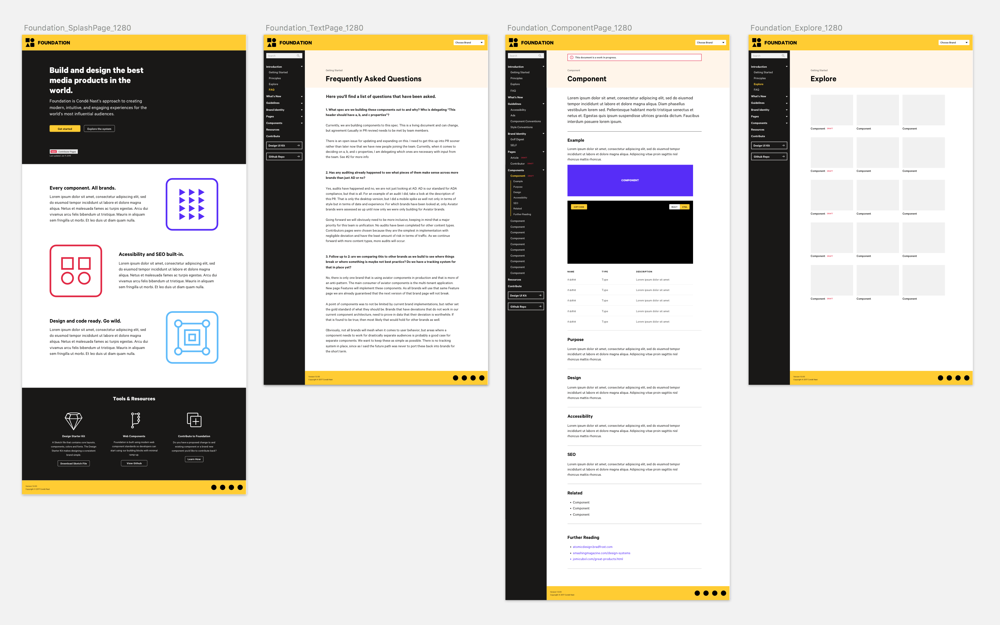
Original concept and branding for a publicly available design system before toning it down to make it more brand agnostic as a strictly private hub. Kept the structure and documentation workflow.
Condé Nast User Journey Framework
Created a framework for building new products to dial in and align user and business needs.
Special thanks: Design: Adrian Harwood
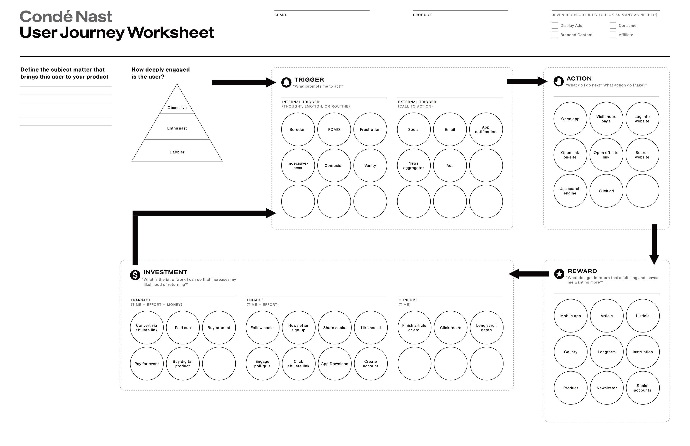
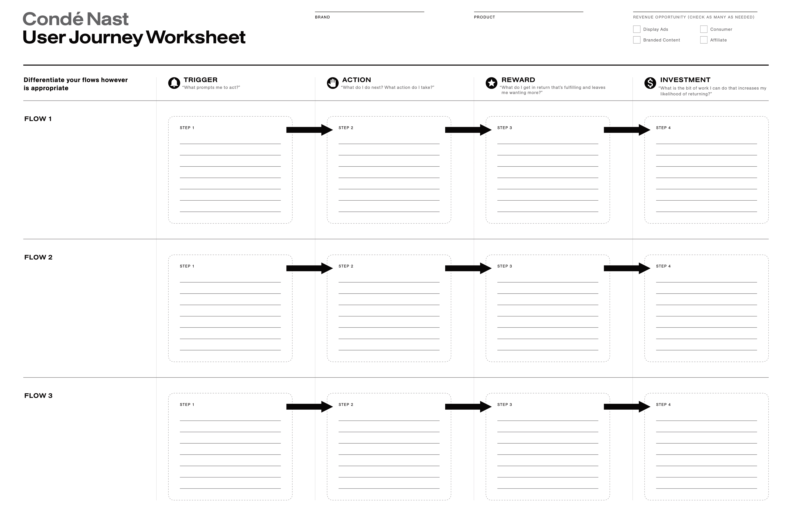
An adaption of the hook model that is tailored to Condé Nast's business model and offerings.
GQ Photo Galleries
Redesigned one of GQ's most visited templates to increase viewability, completion rate, recirculation, and eventually, affiliate revenue and sponsorships. Design was later adapted to all Condé Nast brands (Vogue, Vanity Fair, Bon Appétit, WIRED, etc.) via the Verso Design System.
Special thanks: Product: Doug Seidman. Design: Hugo Broche. Engineering: Dane Stuckel, Isaac Torres, Jennie Shapira, Evan Hopkins. Digital: Jon Wilde, Mike Hofman. GM: Rob DeChiaro.
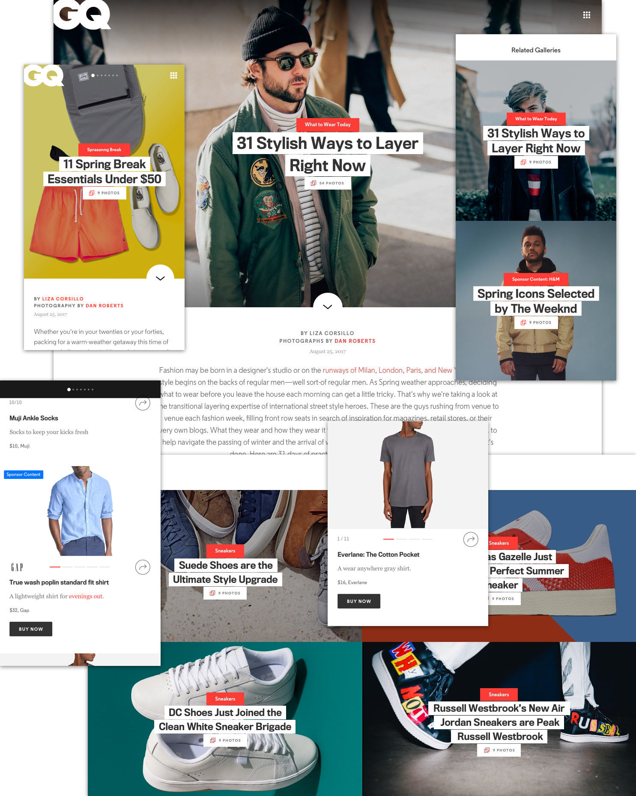
New features include a cinematic feel on both web and mobile, multiple image slide, sponsor content units, affiliate products, immersive recirculation units.
Cinematic feeling story lede immerses you into a more photo-driven template.
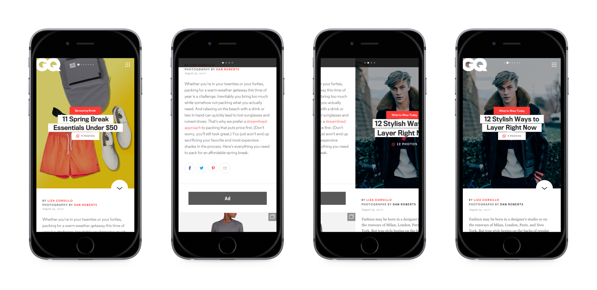
Concept for swiping to the next gallery.
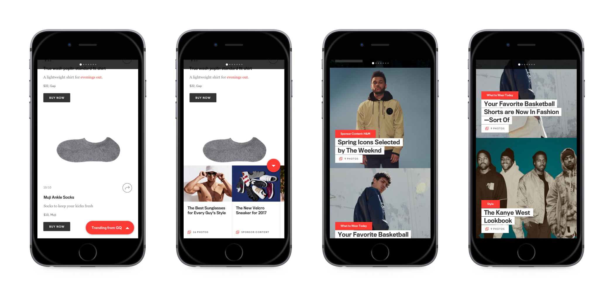
Also designed new recirculation opportunities. (Watch full mobile prototype below.)
Special thanks: Product: Doug Seidman. Design: Hugo Broche. Engineering: Dane Stuckel, Isaac Torres, Jennie Shapira, Evan Hopkins.
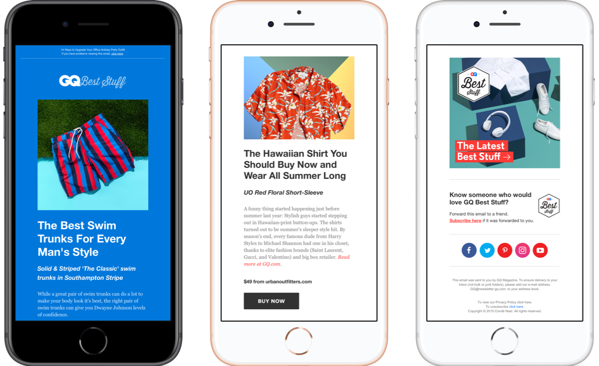
Golf World Redesign
Worked on bringing back one of the oldest sports media brands and redesigning its identity and content experiences. Golf World would be the premiere destination of golf analysis and features related to the sport for Golf Digest.
Special thanks: Design: Elaine Shum, Malcolm Dia. Product: Joe Cera. Engineering: David Colucci. Strategy: Mark Engelberg, Dominic Ainscough. Brand: Chris Reynolds, Molly Baldwin.
New sub-brand homepage.
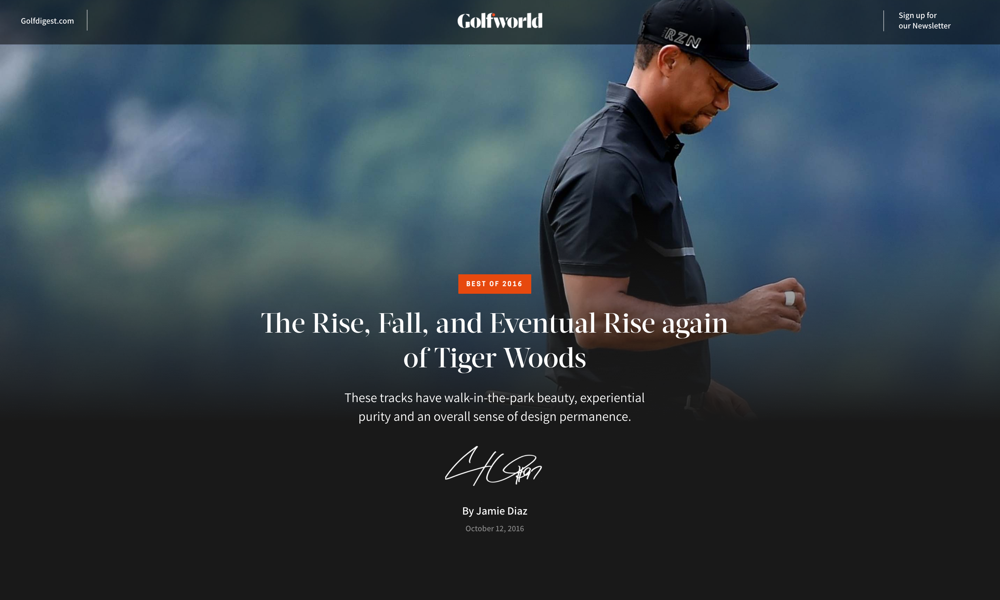
New longform template.
Condé Nast Experience Platform
Designed a proof-of-concept and proposal to create a cross-brand universal design system that would serve all 20+ Condé Nast owned-and-operated websites. The genesis of this thinking with product, engineering, and analytics would plant the seed to eventually become the Verso Design System years later.
Special thanks: Design: Peter Knocke. Product: Joe Cera. Engineering: Sean Mize, Marcos Venetta. Analytics: Tulika Singh.
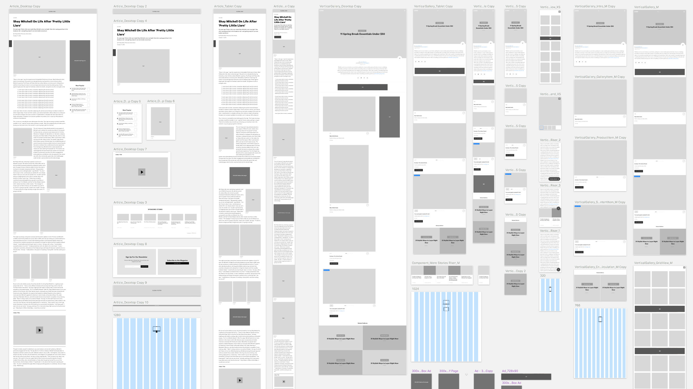
Early design kit. This platform thinking would eventually be applied to GQ Galleries and the project is what would eventually become Verso years later.
Brides Wedding Inspiration Gallery
Worked on information architecture and UX of Brides wedding gallery, a resource and database of all kinds of wedding inspiration, from dresses, to rings, to everything in between.
Special thanks: Design: Elaine Shum, Cortney Cassidy, Sydney Haas, Christina Doo. Engineering: Noah Seger.
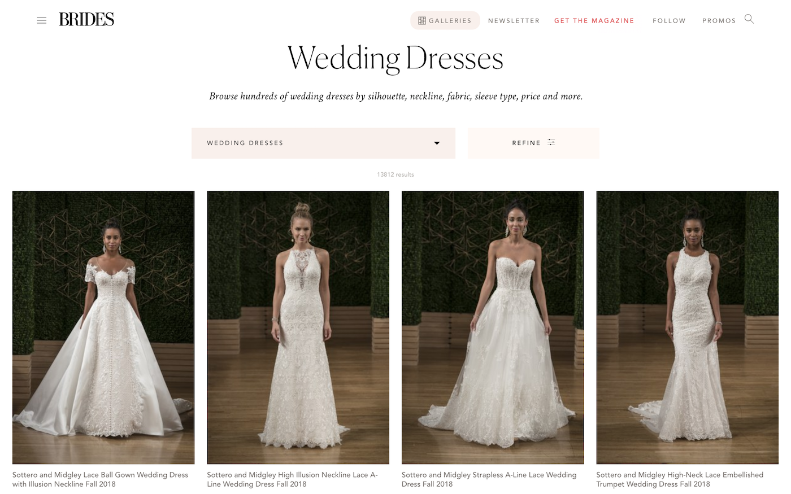
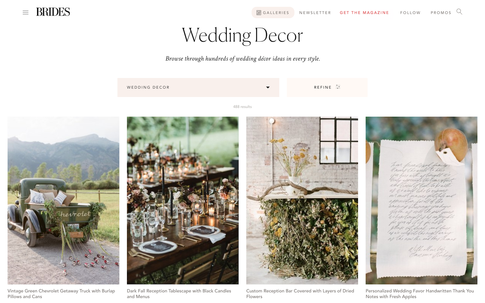
Built a gallery with a faceted search (e.g. “Wedding Dresses” + “Monique Lhullier” + “A-Line”).
Apploi Projects
Apploi Mobile App
Apploi is a B2B2C startup focused on efficient talent acquisition, pipeline, and hiring for hourly work. Designed their next generation mobile app that leveraged the strength of the product focused on video responses and geo-location.
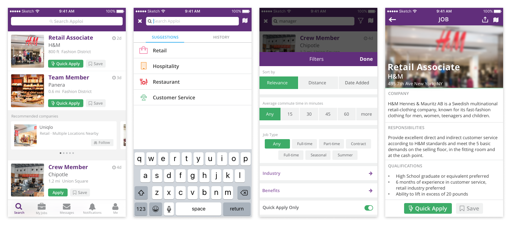
Hypercontextual job app that focused on key industries, travel time, and allowed 1-tap to apply with already existing profile and resume.
Apploi Consumer App (Churchill)
Created a new end-to-end job application system for hourly jobs that removes friction of asking for an application, filling it out, and giving a resume in-store. Instead, all of these can be done in minutes increasing the speed and likelihood to get a hourly job more suited to the applicant.
Special thanks: Product Team: Tom Gebauer, Georgina Narich, Cortney Cassidy, Marie Raton, Rob Greenspan.
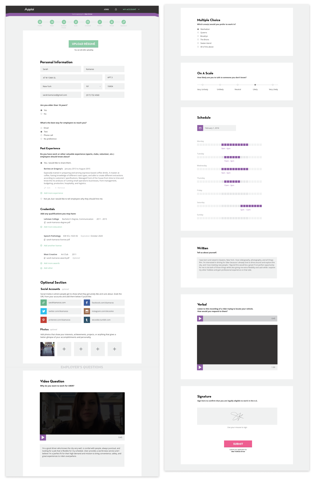
Applicants can pre-fill with their existing resume, answer questionnaires via video/audio responses, and add times that would be ideal for them to work.
Apploi Enterprise App (Truman)
Helped with a major redesign and introduce new functionality to a cloud-based HR app that helps hiring managers list jobs, filter and communicate with candidates, and update their store profile all in a single app.
Special thanks: Product Team: Tom Gebauer, Georgina Narich, Marie Raton, Rob Greenspan.
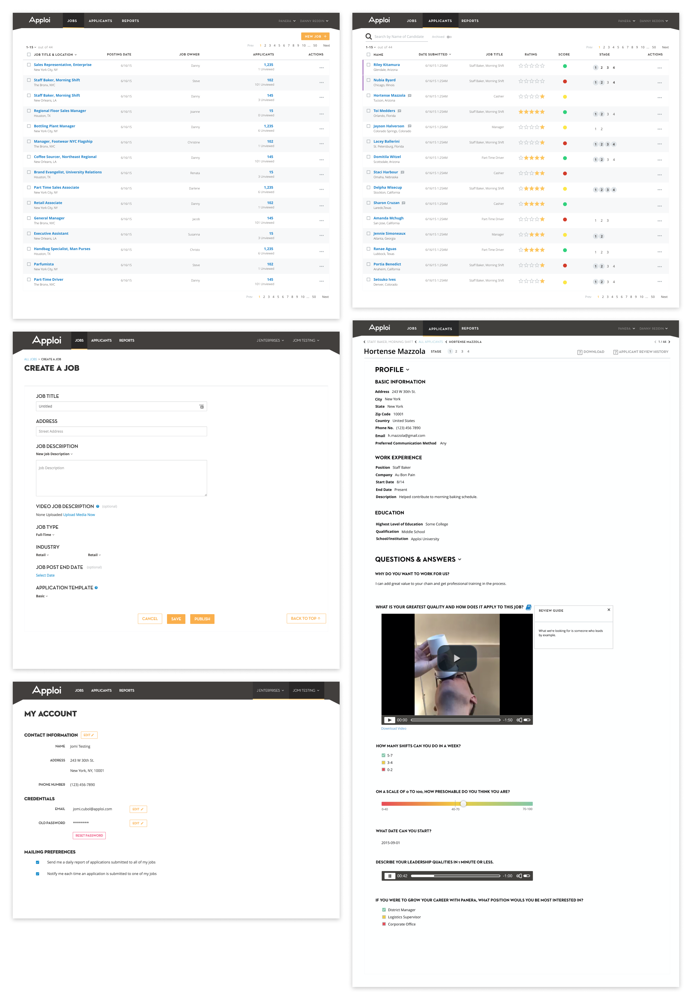
Can see listed jobs and candidates who applied at a glance and can see how far along they are in the process.
⁘
Postscript
These are only some of the many projects and initiatives I was a part of throughout my career but I want to thank everyone that I've worked with in any capacity, from those who gave me a chance, to those I've had the privilege of leading. I'm fortunate to have been in the trenches with some of the best and brightest minds in the industry who will continue to do great work in this business.
If by chance you stumble upon this, know you always have a friend in me. Feel free to reach at all for anything. You know I mean that. Remember the motto: “What's stopping us?!”